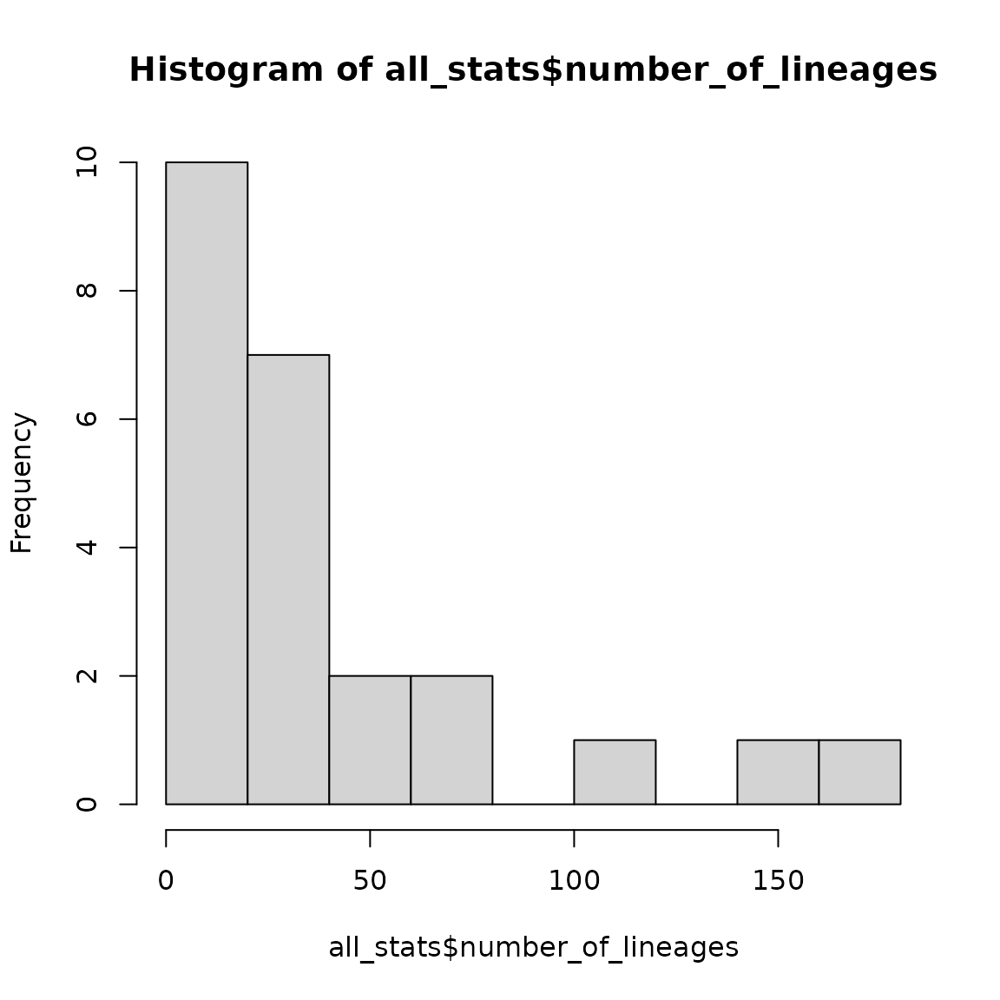

Data
The treestats package can rapidly calculate summary statistics on phylogenetic trees, and in this vignette, we demonstrate this on empirical trees. We will make use of family-level pruned trees stemming from the clootl supertree of birds. These were created for the original publication accompanying the treestats paper.
focal_trees <- ape::read.tree(file = "https://raw.githubusercontent.com/thijsjanzen/treestats-scripts/main/datasets/phylogenies/fracced/birds.trees") # nolintWe can now calculate all summary statistics for all trees:
all_stats <- c()
for (i in seq_along(focal_trees)) {
focal_stats <- treestats::calc_all_stats(focal_trees[[i]])
all_stats <- rbind(all_stats, focal_stats)
}## Loading required namespace: RSpectra
all_stats <- as.data.frame(all_stats)We can now, for instance, plot the distribution of family sizes in birds:
hist(all_stats$number_of_lineages)
Furthermore, we can make a heatmap of all correlations:

This will generate a distorted image: correlations are not corrected for tree size. We can study this a bit more in detail:
opar <- par()
par(mfrow = c(3, 3))
for (stat in c("area_per_pair", "colless", "eigen_centrality",
"four_prong", "max_betweenness", "max_width",
"mntd", "sackin", "wiener")) {
if (stat != "number_of_lineages") {
x <- all_stats[, colnames(all_stats) == "number_of_lineages"]
y <- all_stats[, colnames(all_stats) == stat]
plot(y ~ x, xlab = "Tree size", ylab = stat, pch = 16)
}
}
par(opar)## Warning in par(opar): graphical parameter "cin" cannot be set## Warning in par(opar): graphical parameter "cra" cannot be set## Warning in par(opar): graphical parameter "csi" cannot be set## Warning in par(opar): graphical parameter "cxy" cannot be set## Warning in par(opar): graphical parameter "din" cannot be set## Warning in par(opar): graphical parameter "page" cannot be setTo correct for this, we will have to go over the entire correlation matrix.
tree_size <- all_stats[, colnames(all_stats) == "number_of_lineages"]
for (i in seq_len(nrow(cor.dist))) {
for (j in seq_len(ncol(cor.dist))) {
stat1 <- rownames(cor.dist)[i]
stat2 <- colnames(cor.dist)[j]
x <- all_stats[, colnames(all_stats) == stat1]
y <- all_stats[, colnames(all_stats) == stat2]
a1 <- lm(x ~ tree_size)
a2 <- lm(y ~ tree_size)
new_cor <- cor(a1$residuals, a2$residuals)
cor.dist[i, j] <- new_cor
}
}
diag(cor.dist) <- NA
heatmap(cor.dist)
A nicer way to visualize this is given by the package ppheatmap:
if (requireNamespace("pheatmap")) pheatmap::pheatmap(cor.dist)